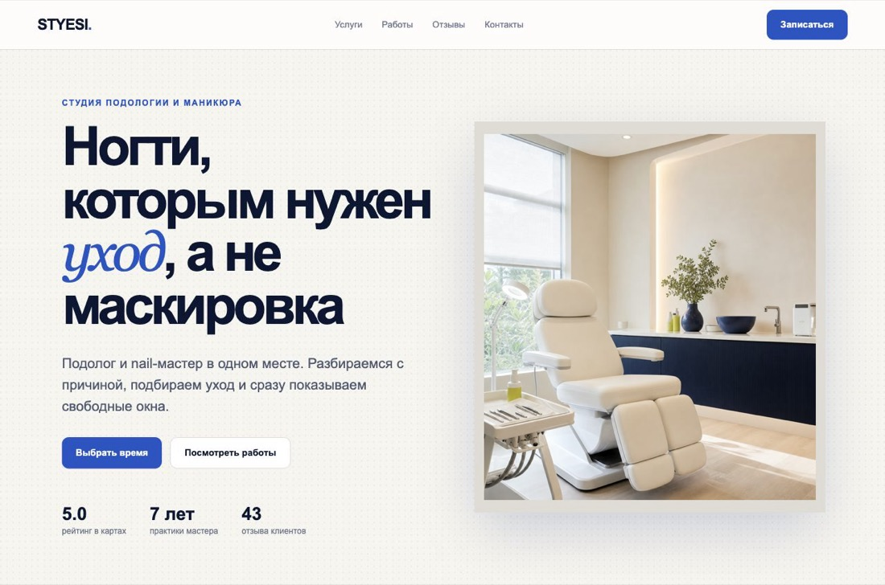
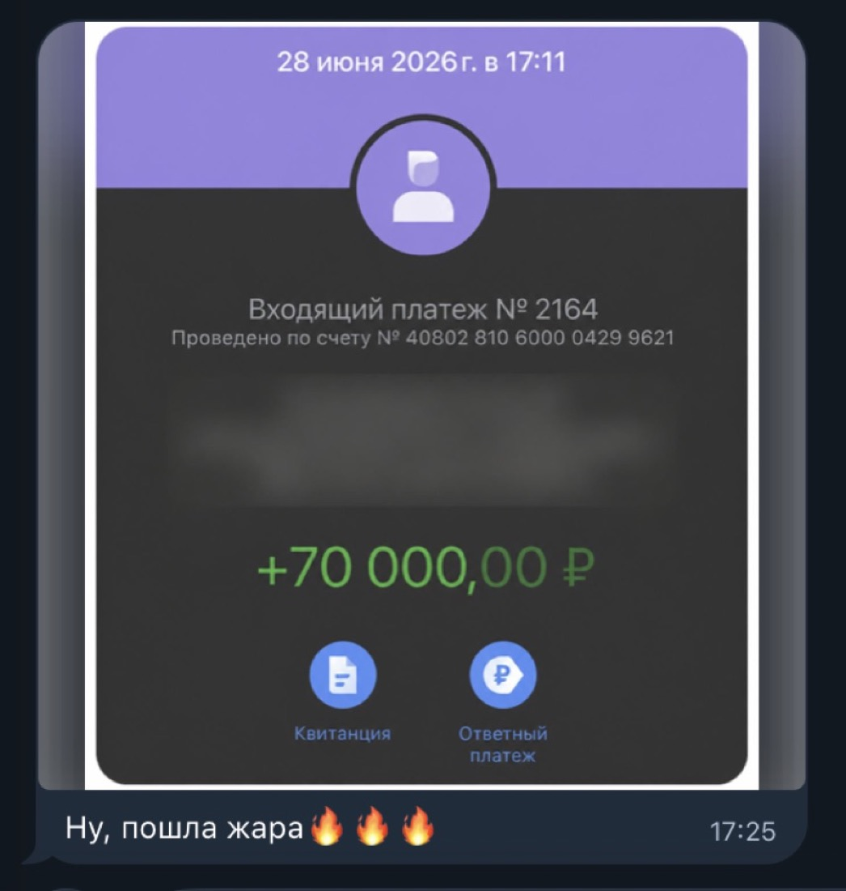

Страница, куда приходят заявки, стоит 25-60 тысяч. Собирается за вечер, а главное, её результат клиент может проверить сам за две минуты.
Отличие от обычного сайта-визитки в том, что здесь работает форма: владелец получает имя, телефон и услугу прямо в Telegram. Именно это и продаёт.
Почему за это платят
У небольшой клиники, салона или ремонтной бригады часто есть только карточка в картах и переписка в мессенджере. Человек ищет цены, задаёт одинаковые вопросы и ждёт ответа администратора. Владелец не оценивает красоту кода. Он смотрит, понятно ли куда нажать и приходит ли заявка.
Результат
Что ты сдаёшь клиенту
готовая страница

Первый экран страницы, собранной по брифу. Клиент видит услугу, цену и кнопку записи за пять секунд
Понятное предложение
Человек понимает, что предлагает бизнес, за первые пять секунд.
Заявка в Telegram
Владелец получает имя, телефон и услугу в привычный мессенджер, без CRM и логинов.
Работа в портфолио
У тебя появляется проект с понятным результатом, который можно показать следующему клиенту.
Подготовка
Что понадобится
ChatGPT
chatgpt.com
Соберёт факты о бизнесе и превратит их в бриф страницы.
@BotFather
t.me/BotFather
Выдаст токен бота, через которого приходят заявки.
Закрытый файл настроек это место, куда кладут пароли и токены. Он не попадает на сайт и не виден посетителям, в отличие от кода самой страницы.
Номер чата это цифра, по которой Telegram понимает, кому отправить заявку. Её получают у бота, а не придумывают.
Сборка
Пять шагов
1
Выбери бизнес и собери факты
Открой Яндекс Карты и найди бизнес с одной главной услугой: подология, стоматология, детейлинг, ремонт техники, небольшая школа. Посмотри отзывы и найди проблему текущей страницы: нет цен, запись спрятана, плохо открывается с телефона. Скопируй ссылки на сайт и соцсети.
2
Преврати факты в бриф
Отдай ссылки ChatGPT с командой ниже. Он соберёт структуру страницы, заголовки, описания услуг и тексты кнопок. Прочитай результат до передачи в Codex и сверь цены с источниками. Сохрани в файл brief.txt.
3
Собери страницу в Codex
Создай пустую папку, положи внутрь brief.txt, открой в Codex и отправь команду. Когда закончит, открой адрес из ответа: на странице должны быть первый экран, услуги, специалист, отзывы, контакты и форма.
4
Подключи заявки в Telegram
Создай бота через
@BotFather, добавь его в тестовый чат и отправь любое сообщение. Попроси агента получить номер чата, сохранить токен в закрытый файл .env и подключить отправку формы.
5
Проверь так, как проверит клиент
Открой на компьютере и телефоне, нажми каждую кнопку. Отправь пустую форму, неправильный номер и правильную заявку. Запиши короткое видео: страница открывается, форма отправляется, сообщение приходит в Telegram.
Команда для сбора фактов
Шаг 1 · можно копироватьИзучи ссылки на сайт, карточку в Яндекс Картах и соцсети компании. Собери факты для демонстрационного лендинга: 1. Какую услугу компания продвигает чаще всего? 2. Сколько она стоит? 3. Что получает клиент? 4. Какие вопросы чаще всего встречаются в отзывах? 5. Как сейчас можно записаться? 6. Какие отзывы и фотографии доступны в открытых источниках? 7. Какой адрес, телефон и график указаны? Для каждого ответа добавь ссылку на источник. Если информации нет, напиши «не найдено». Ничего не придумывай. В конце перечисли данные, которые нужно подтвердить у владельца после показа.
Команда для брифа
Шаг 2 · можно копироватьТы помогаешь подготовить бриф для демонстрационного лендинга локального бизнеса. Используй только факты из собранной таблицы и приложенных источников. Сначала сформулируй одно главное предложение для первого экрана. Затем собери порядок блоков: первый экран, услуги и цены, специалист, отзывы, ответы на вопросы, адрес и форма записи. Для каждого блока напиши готовый текст. Главная кнопка везде называется одинаково. Неизвестные данные пометь словами «согласовать с владельцем». Не придумывай цены, опыт, гарантии, отзывы и акции.
Команда для сборки страницы
Шаг 3 · можно копироватьПрочитай brief.txt и собери адаптивный лендинг. Используй обычный HTML и CSS без внешних библиотек. Сделай светлый фон, тёмно-синий текст и лаймовый цвет для главных кнопок. Добавь блоки в порядке из брифа. Все кнопки записи должны вести к форме. В форме оставь имя, телефон и выбор услуги. Не придумывай факты и фотографии. Если данных не хватает, поставь заметное место для заполнения. Запусти проект локально и напиши адрес страницы.
Команда для подключения Telegram
Шаг 4 · можно копироватьПодключи отправку формы в Telegram. Возьми BOT_TOKEN и CHAT_ID из файла .env. После отправки владелец должен получить имя, телефон, услугу, адрес страницы и время заявки. Не выводи токен в браузер, исходный код страницы и логи. Если Telegram недоступен, покажи человеку понятную ошибку и сохрани заявку для повторной отправки.
Про токен
Токен бота не отправляй в переписке и не вставляй прямо в страницу. Он живёт в закрытом файле .env на сервере. Если токен попадёт в код страницы, любой посетитель сможет писать от имени бота.
Проверка
Пять сценариев перед показом
| Действие | Что должно произойти |
|---|
| Нажать главную кнопку | Открывается форма |
| Оставить телефон пустым | Появляется понятная подсказка |
| Отправить правильную заявку | Появляется подтверждение |
| Открыть Telegram | Приходит имя, телефон и услуга |
| Открыть страницу на телефоне | Текст и кнопки помещаются на экране |
Продажа
Покажи один путь от кнопки до сообщения
На встрече не рассказывай про нейросети. Открой страницу, отправь заявку и покажи, как она прилетела в Telegram. За две минуты владелец увидит пользу лучше, чем после получасовой презентации.
Первую версию удобно продавать комплектом: страница, мобильная версия, форма, уведомление в Telegram и проверка всех кнопок. Ориентир 25-60 тысяч, цена зависит от количества страниц, форм и подключённых сервисов.
Если не работает
Что чаще всего ломается
Форма отправляется, но заявка не приходит
Две причины. Либо номер чата указан неверно, либо бот ещё ни разу не получал от вас сообщение: пока переписки нет, Telegram не даёт ему писать первым. Отправьте боту любое сообщение и попробуйте снова.
Приходит заявка без имени или телефона
Поля не обязательные. Попроси агента сделать имя и телефон обязательными и показывать понятную подсказку, если человек их не заполнил.
Страница не открывается по ссылке
Проверь, что главный файл называется index.html, а в настройках выбрана нужная ветка. После первой публикации подожди пару минут: страница собирается не мгновенно.
На телефоне кнопка уезжает за экран
Напиши агенту: «проверь страницу при ширине 390 точек, блоки в одну колонку, кнопки на всю ширину, ничего не должно выходить за край». Это правится за один заход.
Чек-лист перед встречей с владельцем
- Отправил настоящую тестовую заявку и увидел её в Telegram
- Проверил пустую форму: подсказка понятная, не английская ошибка
- Открыл страницу с телефона и прошёл весь путь пальцем
- Цены и адрес совпадают с источниками, ничего не выдумано
- Записал короткое видео пути от кнопки до сообщения
- Токен нигде не виден: ни в коде страницы, ни в переписке
Разговор с клиентом
Что отвечать на частые возражения
«Заявки и так приходят в директ»
Приходят те, кто дошёл до директа. Страница ловит тех, кто хотел узнать цену и ушёл. И заявка приходит структурно: имя, телефон, услуга, а не переписка на двадцать сообщений.
«А если Telegram заблокируют?»
Заявки можно дублировать на почту или в таблицу, это добавляется за полчаса. Начнём с Telegram, потому что вы им и так пользуетесь каждый день.
«Нам нужна интеграция с нашей CRM»
Это делается, но давайте вторым шагом. Сначала запустим страницу и посмотрим на поток заявок. Если их будет много, подключение к вашей системе учёта окупится, если мало, сэкономим вам деньги.
«Сделайте, а заплачу после первых заявок»
Заявки зависят не только от страницы, но и от рекламы и сезона. Поэтому работаю по предоплате половины. Демонстрацию вы уже посмотрели и видите, что именно получите.
Куда это приводит
Клиент платит за результат, который может открыть и проверить
Не за код и не за красоту. За понятную страницу, работающую кнопку и заявку, которая пришла ему в телефон.

70 000 рублей за результат
Оплата за работу, которую клиент открыл на своём телефоне и проверил сам. Именно это снимает возражения на этапе цены.
Елена, 46 лет
24 года в бухгалтерии, двое детей
Была уверена, что нейросети это для двадцатилетних программистов. Решилась, когда увидела, как дизайнер получил её месячную зарплату за пару дней работы. Первый заказ через четыре недели.
4 неделидо первого заказа
30кпервый чек
от 140ксейчас в месяц, из дома
Забрать бесплатный тест-драйв
5 уроков: разбираем рынок, собираем первую работу руками, проходим 7 способов найти клиента. Дошедшим до конца разбор и гайд по закрытию первого клиента.
Что делать дальше
Выбери один бизнес у дома и собери для него демо-страницу с рабочей формой. Дальше тому же клиенту предлагаешь ИИ-ассистента, а где искать заказчиков, разобрано в гайде про первые заказы.